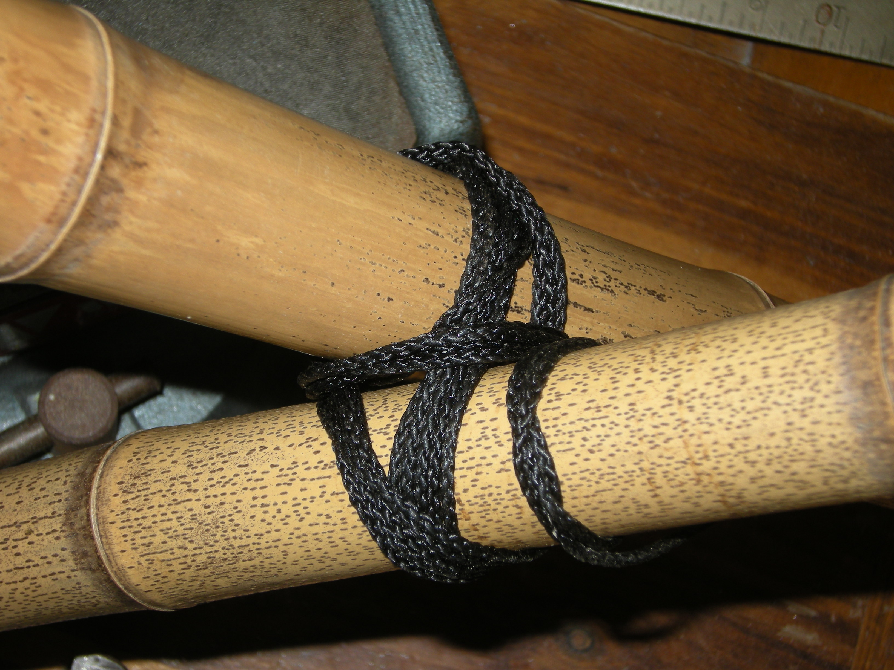

On this final day of the project I tackled the final two joints that required more cutting. The first one is a variation on the T-joint that leaves two pegs poking up through a pair of holes in the cross piece. See here for an image that may be clearer than my description. It is the one on the top right.
The issue I ran into with this was that I couldn't use the sanding technique that worked so well last week because that would sand off the pegs as well. To account for this I tried to make a jig by sandnig a notch down the middle of another piece, with the idea that I could then wrap the two sides with sandpaper and use that to fit the ends and the peg would remain in the space where the notch was. Unfortunately two things made this difficult. First, it was hard to keep the middle notch straight and soon I had wandered far off the centerline. Second, this piece of bamboo was much denser than the previous one, and the sanding was a lot slower. By the time I finished sanding this unsatisfactory notch I had burned up most of my time for this joint and it wasn't really usable. They say that bamboo takes 3~5 years for a culm to mature and reach its full strength and density. The difference in sanding those two pieces really helped make that clear to me how much that aging helps strengthen it.
Obviously I was going about that the wrong way, since if somebody was building so many of these joints to make a structure, they couldn't spend all that time on each one. A little more reading after class led me to find that these fit cuts aren't made at an exact fit to the curve of the other piece but instead just cut in a V shape to approximate. Two straight cuts would go much faster, so next time I will try that.
The final joint was the peg/notch key joint. This one also took some time to measure and cut all the pieces to make them fit just right. These are all the pieces after cutting but before assembly. The square hole was a challenge at first until I realized I could simply cut the straight lines across the grain of the bamboo, and just snap them out along the sides that run parallel to the grain.
The tricky part with this one was getting all the holes lined up enough to get the pin through, but not completely aligned so that there would be tension holding it together. What finally worked well was having the hole through the inside peg drilled a little too far out and then filing it down until there was just enough room to get the pin through. It's a little hard to see in this picture but if you look carefully you can see that the holes are just barely starting to overlap. (right-clicking the picture and selecting "view image" should give you a close-up view)
Finally, here is the assembled joint. I used the slotted piece from the previous failed joint to make a window to see what was going on inside. It was very tricky to feed the pin through, but after a few tries and adjustments it fit. My rendition of this joint is not very strong because it is limited by the strength of the pin, which is almost a tiny toothpick at this size. Scaled up to larger diameter bamboo, a thicker wooden peg could be used which would be much stronger.
All of these cut joints were very time consuming as compared to the lashings. After trying both I can see why lashings are more common since they are fairly easy to do and don't take as much experience as the cut joints. I can see where bolted joints could be very strong too. The nice thing about the lashing is that it can usually be combined with the other techniques to add reinforcement to them.
Not every joint was a success but now I feel like I have at least a better idea about how these things go together and what some of the difficulties are on some of the more complex joints. There were some pictures of buildings made with compound joints that used several poles lashed together into a beam or column and then cut to different lengths on the ends to fit together. These look very strong and once I learn more about growing bamboo and create a good supply I'm looking forward to playing with those.
Today I switched from note-taking mode to doing mode to actually try and make some of these joints.
First I focused on the joints that did not require any cutting/drilling. That way the joints could be undone once I finish and the pieces reused for the next joint. The first joint was connecting two pieces alongside each other in parallel. This started out easily, with a clove hitch then wrapping around and keeping the wraps tight. At the end when it was time to tie off to the other pole, I found it difficult to fit the line between the two poles to tie off the final knot. What finally allowed it to get through was the tapering of the segments between the culm nodes, as they provided a slight gap.
After the first lashing was complete, I found that there was more flex than I would like between the two pieces. Essentially they were pivoting from each other at the lashing point. This was kind of expected as it is the same sort of lashing used for a 3-post tripod. My plan to resolve this was to do the lashing twice, spaced a bit apart, creating two fixed points instead of just the one to prevent pivoting. That worked out great and the connection felt very solid after that.
The second lashing I did was the 90 degree square lashing. That was pretty straightforward, one of the tips I read from the knot site was to add each wrap to the outside on one pole and on the inside on the other pole. While that is not so critical it makes a cool pattern where the string has a smooth gradual incline. The diagonal 90 degree lashing was similar, from what I read that works better for poles that are closer to 45 degrees instead of 90, for instance in a truss. Both felt pretty solid but if you put a lot of force on the ends of the beams they would twist/pivot a little. I think a beam really would have to be fixed in place at both ends for it to work well.
Square Lashing
Diagonal Lashing

The third lashing was a round one for a compression-type joint. The idea here is you have two poles of different diameters where one can slip inside the other. The bigger pole is cut with long lengthwise slots on the end so that the tabs can be squeezed together. Then the smaller pole is slipped inside and the lashing goes around the outside of the big pole. The bamboo pieces I had were all about the same size so I couldn't really build this one but I still wanted to try the lashing out as it was a little different from the others. This lashing had this clever-looking thing where you make a big loop and then lash all around it so only the end is sticking out. Finally you take the loose end, put it through the loop and pull the loop+end underneath all the other wraps. When I tried to do this though, the wraps were so tight that I could not pull the loose end back under them all, only maybe 1 or 2. Perhaps they use another smoother type of string, or maybe it has to do with the slots making some extra room. Still, it seems if the lashings are tight enough to hold the joint it would be impossible to pull anything under them...
Here you can see on the right side where I was only able to pull it under the first two turns.
The final joint today was a T-joint. This is the first one that used some cutting. To make this joint, I needed to drill a hole in one pole as well as carve out it's end so that it would fit smoothly against the other. While drilling the hole I wound up making a split on the bamboo which is not a thing you want to do. On the plus side though it gave me a chance to try out the split repair lashing. That went all right but still if I had a pole split in the real world I'd prefer to toss it and get a new one, as bamboo grows fast and is plentiful.
The other issue I had was making a concave round in the end of the pole so it would fit flush tightly against the side of the other one. After trying some different saws and other tools and not being happy with those I came across the supply of sandpaper belts for the sander in the lab. By wrapping one of these around the pole I was able to use that as a template to sand its shape into the end of the other pole. Later in the day a classmate pointed me to the sandpaper stash which would have been much easier than using the belt but it still didn't take very long which was kind of surprising. The lashing went through the holes and around the cross pole. An alternative form of this joint uses a peg through the hole with the ends sticking out and then using the peg ends as hold points for the lashing.
Today I continued researching joint types and made sketches of all the joints that I wanted to try. In these drawings I tried to show not just the finished product but also the way the cord runs for doing the steps to tie the knot. While searching for that detail I came across an animated knots website that showed all the steps of tying all sorts of knots in a way that was easy to follow, pause and go back step by step. This was a big help as the bamboo resources would usually just describe or show the finished product without the steps in between to get there.
Here is the final list of joints that I have sketched out and want to attempt:
Today officially starts project #2. For the first half hour or so I read through the other journals to get the assigned reviews out of the way so that I don't forget them.
Next, I started working on sorting out my info sources. Over the last few weeks I've been keeping an eye out for info and found several types of things from papers to web sites to books which I have been gathering together. Going through those I discovered that the "print to pdf" technique that I had been using to stash the info did not work on some of the more overwrought web sites, so I had to go back and track them down again. Putting this stuff in order and fleshing out the initial "establishing the project" entry with the URLs and other info took another couple of hours.
Now as that's done I'm reading through the docs and noting down the different types of joints I see. Overall they are falling into classifications along two dimensions.
The first is based on the orientation of the pieces being joined to one another. Here I see three broad categories:
The second is more about the type of material used in the connection.
The peg/notch/key methods involve cutting notches that make the pieces fit together, inserting pegs to reinforce the lashing, or smaller pieces that act as bracing. A lot of these techniques rely on wedges to tighten things together.
The carve and bend methods involve leaving a long strip between nodes of a culm and wrapping it around another piece then lashing it back together. This can only be done with green bamboo as dried bamboo won't be able to bend.
There are also a lot of "modern" type connectors that are specifically made for bamboo, with special brackets/hubs, etc. that are made to fit into the ends of the pieces to connect them together.
For this project I'll be focusing on the lashing and peg/notch/key methods, as my pieces are not green, and I don't want to buy a bunch of specialized metal joining bits.
The bamboo pieces are already here, though I may need to buy some more if I want to do every type of joint. Perhaps I could reuse some of them though if I take a picture and then undo the lashing to make the next one. Also, I ordered some stronger line from amazon last weekend as the cord I had at home wasn't really right for this sort of thing. That should be arriving tomorrow along with a book.
After making the list of types I started making sketches of the details on how the joints go together, and got three of those done. I may need to expand my info search to include different specific knot tying techniques as some of my sources are thin on those details.
This weekend was the state bamboo society's 2-day event at the botanical garden. On Saturday I was working so only arrived at the very end of the day. The character of the event was very different from the meetup for project 1. This was set up more with tables where people were selling bamboo-related crafts and things, along with various bamboo plants. The environment was less classroom-like and more casual so it was easier to talk to a few of the people there.
One guy who I talked to was especially helpful. He had a really comprehensive book that listed each genus/species of bamboo along with its properties like height, circumference, color, and so on, along with information about nurseries across the country and which species they carry. He was also able to answer a lot of the questions that I had about growing and caring for the plants. I'd like to grow some of the really big ones, but would need to have them in containers for a few years, so I asked about how practical that was. We talked about containers, trimming for height, and how to divide the plant into smaller segments when it starts to need more space. He also had a lot of suggestions about the different species that would best fit my purposes, going through the book and circling different ones, pointing out their advantages and disadvantages. While the external "craft-sale" appearance of the event made it feel at first that maybe it was not quite what I was looking for, talking to the people there and learning about the information they had to share was really a lot more valuable than what I had expected.
On Sunday I went back and spent a little more time out in the garden looking at the different types of bamboo they had growing there, as well as the places where they had used it in fences, gates, and so on. Unfortunately most of applications it had been put to in the garden were decorative as opposed to structural. Indoors I talked to one guy who made flutes and he told me some about the process. I was especially curious how he knocked out the sectional dividers on the inside, as I had read that same process was needed for one of the curing techniques. Finally I bought four sections of pole to use for the joints, and I can cut them into smaller pieces if more are needed.
The second project is the physical world one. For this project I'll be learning about how to make different kinds of structural joints for bamboo construction. I've been interested in bamboo as a building material because it can be strong, lightweight and renewable. There are a lot of differences between the structure of bamboo and regular timber that make the more mainstream timber joining techniques inappropriate. While bamboo can be processed into composite materials that behave more like dimensional lumber, I'm more interested in learning about the types of joints that can be done without that sort of industrial processing, instead just using handheld tools.
| Item | Description |
|---|---|
| Goals | Learn to make various types of stable, load-bearing joints between bamboo pieces. |
| Materials |
Here is a list of the books, papers, and webpages that I have found to look useful for this topic. |
| Activities | Activities will start with finding descriptions of different types of joints from different sources and compiling a list of the main types along with some sketches. Next I would like to create models of these various joints using small bamboo pieces. |
| Offline Learning Communities |
The state bamboo society has their annual event in town this September so I will be attending that. |
| Online Learning Communities |
|